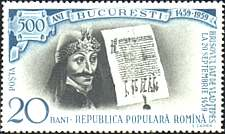
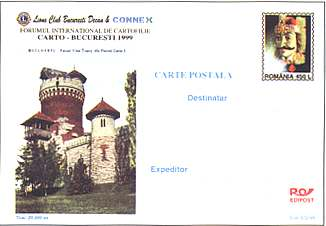
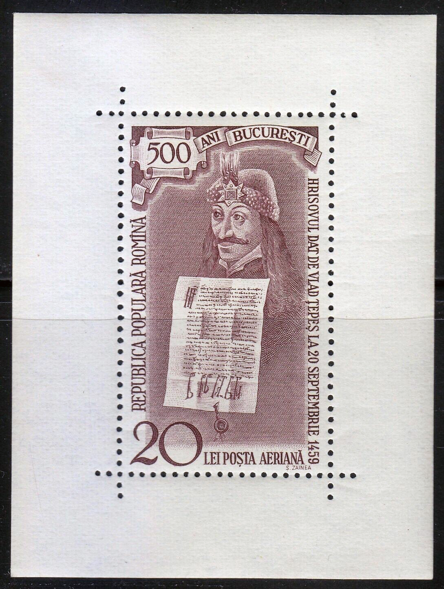

Dracula and Vlad the Impaler on Postage Stamps
Who is afraid of Dracula? Few literary characters have enjoyed such an extraordinary afterlife — including on postage stamps — as Bram Stoker’s vampire. Behind the legend, however, stands a historical figure: Vlad III, known as Vlad the Impaler, a fifteenth-century ruler of Wallachia.
Published in 1897, Stoker’s novel Dracula inspired countless screen adaptations, from F. W. Murnau’s Nosferatu (1922) to films directed by Tod Browning (1931) and Terence Fisher (1958). The bloodthirsty vampire belongs to fiction; Vlad the Impaler belongs to history. The meeting of these two worlds makes a fascinating subject for collectors.
Romania’s 1997 Europa issue: Stories and Legends
On 5 May 1997, the Romanian postal administration issued two stamps featuring Vlad the Impaler and Dracula under the Europa theme Stories and Legends. It was an inspired pairing: the historical ruler and the fictional vampire appear together, yet retain their distinct identities.

The 400-lei stamp depicts Vlad the Impaler, while the 4,250-lei stamp portrays a suitably terrifying Dracula. The adjoining labels evoke the setting of the legend. According to information originally published about this issue, 120,000 sets were printed, in sheets containing twelve stamps and eight labels. The striking difference between the two denominations is itself noteworthy.
Vlad’s image also appeared on other commemorative and postcard material. The following two pieces recall Bucharest’s anniversary and the Vlad the Impaler Tower in Carol Park.


Vlad the Impaler and the 1959 miniature sheet
Vlad III, son of Vlad II Dracul, ruled Wallachia in 1448, from 1456 to 1462, and again in 1476. He became notorious for his ruthless methods of punishing enemies, but he was certainly not the vampire invented by Stoker.
On 20 September 1959, Romania commemorated the 500th anniversary of the first documentary mention of Bucharest with a miniature sheet showing Vlad the Impaler and a historical charter. Designed by Șerban Zainea, it has a face value of 20 lei. The original article recorded a printing of 30,000 copies.

A personal recollection. When this miniature sheet appeared in 1959, I was a schoolboy in Bucharest. I had started collecting Romanian stamps only a year earlier and had been advised to concentrate on recent issues, which were more affordable.
The Vlad the Impaler sheet remained on sale at face value for several years. Yet 20 lei was a considerable sum compared with my father’s salary as a teacher. At the time, I could only dream of owning it.
In the years that followed, my collecting interests broadened and my fascination with this particular item faded. Then, roughly 25 years later, far from Romania, a friend gave me the sheet as a present. Naturally, I could not refuse! Patience is one of a collector’s greatest virtues, isn’t it?
Dracula on European stamps
The 1997 Europa theme, Stories and Legends, inspired other postal administrations as well. Great Britain and Ireland portrayed Dracula in quite different ways, from a theatrical vampire portrait to a dramatic encounter with a possible victim.


Where does the name Dracula come from? Vlad’s father, Vlad II, was known as Dracul, a name associated with the Order of the Dragon. In modern Romanian, drac can also mean “devil” — an ambiguity that has undoubtedly added to the legend’s dark appeal.
Original article: Victor Manta, 2001–2002 · Updated 2026.
© Victor Manta, Switzerland.